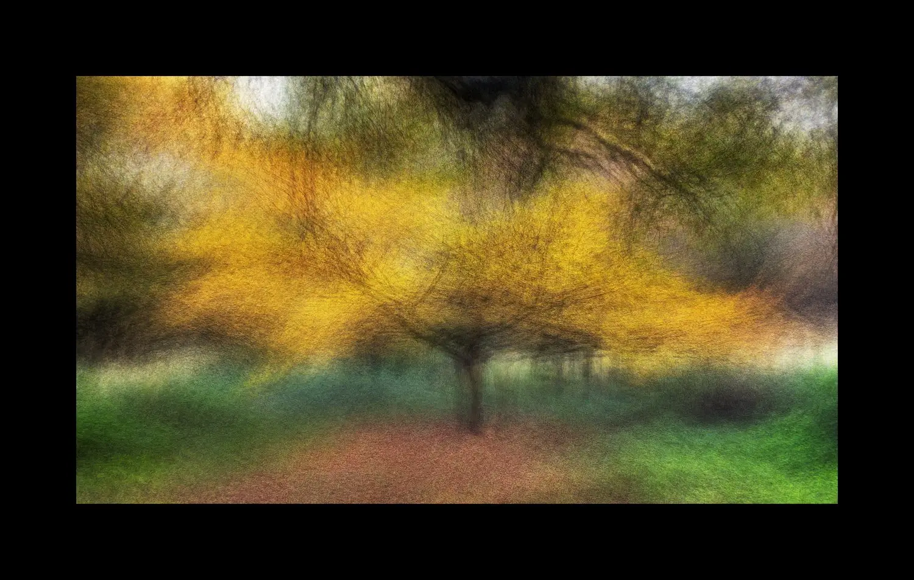

After 2 years away from exhibiting, the Crouch End London Independent Photography group is back with our annual exhibition.
Held at the Original Gallery in Hornsey Library N8 9JA (a lovely space) 16 artists are showing their work, most of which was made in the hiatus caused by the Pandemic.
Private view: 15/03/2022 19:00–21:00
Meet the Artists: 26/03/2022 13:00–16:00
I am showing four from my Motion Stills and Ghosts of the Broomway work

| « next | » previous |